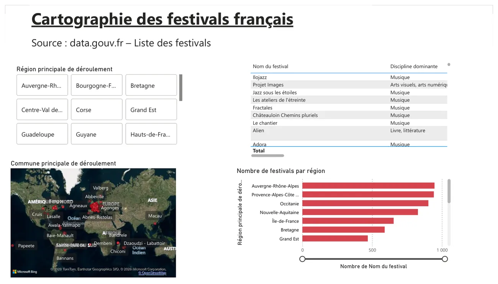
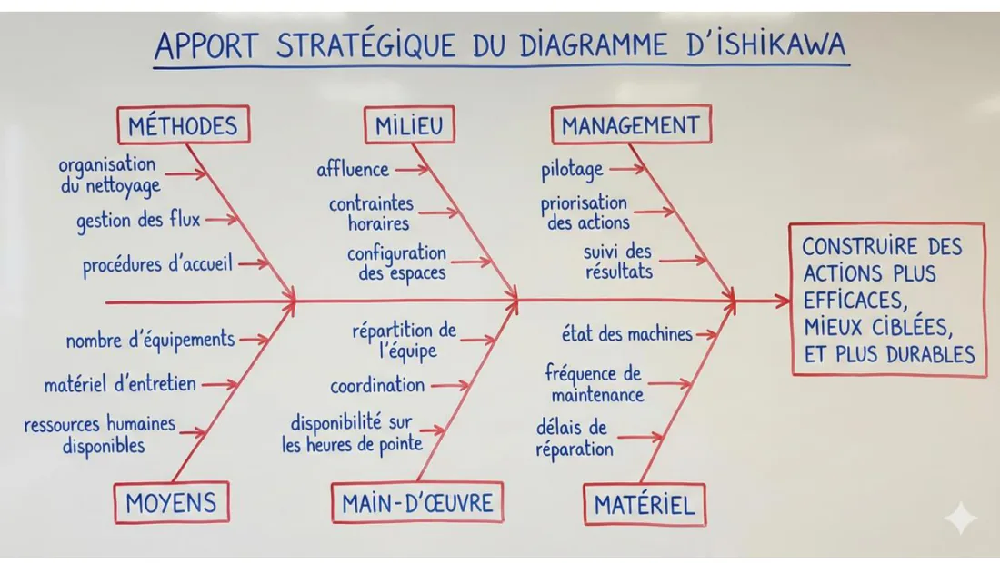

Pilotage et performance · BC2 · BUT 3
Niveau 3 : Participer activement à l’amélioration du pilotage de l’organisation
Niveau attendu en troisième année : compétent. 4 apprentissages critiques, chacun avec ce qu’il recouvre, la situation où je l’ai travaillé et mes traces.
Apprentissages critiques du niveau 3
- AC32.01
Élaborer et suivre les différents tableaux de bord nécessaires au pilotage de l’organisation
Choisir les indicateurs pertinents, construire le tableau de bord, l’alimenter dans la durée et en tirer des alertes ou des actions.
Pour piloter le projet de site, j’ai construit autour du Gantt un tableau de bord à quatre familles d’indicateurs : le planning, avec le taux d’avancement, les jalons tenus et les actions en retard ; la qualité des pièces, avec leur complétude, le nombre de retours lors des validations et le délai moyen de validation entre services ; la coordination ; le résultat attendu. En alternance, j’ai aussi analysé les consommations de produits d’incontinence et de gants en nitrile et en vinyle par service, pour repérer les écarts et en discuter avec les services concernés. En traitement de données, nous avons construit en binôme un tableau de bord Power BI sur les festivals en France à partir de data.gouv.fr : plus de 7 280 festivals, un nettoyage sous Power Query, une colonne calculée d’ancienneté, une carte et une page par région, toutes deux interactives.
Avec le recul, dans le rapport Power BI, les effectifs par région ont été lus sur le graphique et arrondis, alors que le modèle permettait d’en exporter les valeurs exactes.
TracesRapport de SAÉ 5.01, tableau de bord et indicateurs (document interne)Analyse des consommations d’incontinence et de gants (document interne)Rapport Power BI : les festivals en France (binôme)PDF

Page « Cartographie des festivals français » du tableau de bord Power BI. - AC32.02
Proposer une solution juridique à une situation donnée
Face à un problème concret, ne plus seulement l’analyser mais recommander la solution juridique la plus sûre pour l’organisation, arguments à l’appui.
Le choix de la procédure du site a été une vraie question juridique : seul, le montant estimé ouvrait la voie à une procédure adaptée, mais la computation des seuils oblige à additionner les dépenses de la même famille d’achats ; le total dépassant le seuil des procédures formalisées, le marché a été lancé en appel d’offres ouvert, pour un an reconductible trois fois. Sur le marché de transport de corps et de biens, j’ai repris l’ancien marché et son deuxième avenant, puis renforcé dans le CCAP et les deux CCTP les clauses de continuité de service, de délais, d’hygiène, de traçabilité, d’incidents, de pénalités et de substitution, ajouté un plan de continuité d’activité en annexe et préparé l’analyse des offres sur 40 % pour le prix et 60 % pour la valeur technique. En droit de la communication, j’ai rédigé des synthèses sur la liberté d’expression numérique et sur la propriété industrielle.
Avec le recul, les pièces ont été relues par ma tutrice et la cellule des marchés : je ne suis pas encore autonome sur les points juridiques les plus complexes, comme la rédaction des sous-critères de la valeur technique.
TracesPièces du marché de transport de corps et de biens (documents internes)Rapport de SAÉ 6.01, choix de la procédure (document interne)Synthèses de droit de la communication (individuel)

Schéma des procédures selon les montants, repris dans ma soutenance pour expliquer le passage en appel d’offres ouvert. - AC32.03
Arbitrer entre les solutions de financement pour une situation donnée
Comparer emprunt, crédit-bail, autofinancement ou subvention selon leur coût et leurs contraintes, puis recommander la solution la mieux adaptée.
C’est l’apprentissage le moins exercé de mon année : je n’ai pas eu à arbitrer moi-même entre des solutions de financement. Ce qui s’en approche le plus, c’est d’avoir alerté la DSI dès décembre 2025 sur la nécessité d’inscrire le projet de site au budget de l’exercice 2026, le montant final conditionnant aussi le choix de la procédure. Le reste relève de la compréhension : à l’hôpital, la dépense se décide dans un budget annuel contraint, et une estimation trop basse fragiliserait la consultation, quand une enveloppe trop haute ne serait pas cohérente avec les moyens de l’établissement.
Avec le recul, je n’ai construit aucun plan de financement ni comparé emprunt, subvention et autofinancement cette année : c’est le premier point à reprendre en master.
TracesRapport de SAÉ 5.01, budget prévisionnel (document interne)Rapport de SAÉ 6.01, budget prévisionnel (document interne)
- AC32.04
Contribuer à la démarche qualité de l’organisation
Prendre part à l’amélioration continue : repérer les dysfonctionnements, formaliser des procédures, suivre des indicateurs qualité et proposer des actions correctives.
En démarche qualité, nous avons construit en binôme celle d’une salle de sport fictive, PERFORMANCE+ : engagement de la direction, attentes des cinq parties prenantes, questionnaire de satisfaction noté de 1 à 5 avec une question de recommandation, indicateurs, analyse des résultats et diagramme d’Ishikawa pour remonter aux causes. Les forces sont relationnelles, avec l’accueil à 4,3 sur 5, la sécurité à 4,2 et l’accompagnement des coachs à 4,1 ; les faiblesses sont opérationnelles, avec la disponibilité des équipements à 3,3, la propreté des espaces et vestiaires à 3,7 et les horaires à 3,8, d’où un plan d’action par priorité. En alternance, la qualité passait par le terrain : faire tester des feuilles absorbantes au bloc opératoire avant toute décision, mettre à jour les références à la norme ISO 22000 dans les pièces du marché des pains, renforcer l’hygiène et la traçabilité dans celles du transport.
Avec le recul, PERFORMANCE+ est une entreprise inventée pour l’exercice, son plan d’action n’a donc pas été mis à l’épreuve ; et au bloc opératoire, la validation du produit dépendait encore du retour complet du service à la fin de mon rapport.
TracesRapport d’analyse de la démarche qualité PERFORMANCE+ (binôme)PDFSuivi des tests de feuilles absorbantes au bloc opératoire (document interne)

Résultats du questionnaire de PERFORMANCE+ : les cinq critères les moins bien notés. 
Diagramme d’Ishikawa : les causes classées selon les 6 M.


Bilan du niveau 3
Points forts : choisir une procédure en appliquant la computation des seuils, renforcer des clauses contractuelles, construire des tableaux de bord, de l’indicateur de projet au rapport Power BI, et mener une démarche qualité complète.
À renforcer : le financement, que je n’ai pas eu à arbitrer cette année, et l’autonomie sur les points juridiques les plus complexes.
Pour la suite : en master, construire un plan de financement complet et analyser les écarts entre budget et réalisé pour piloter les achats.